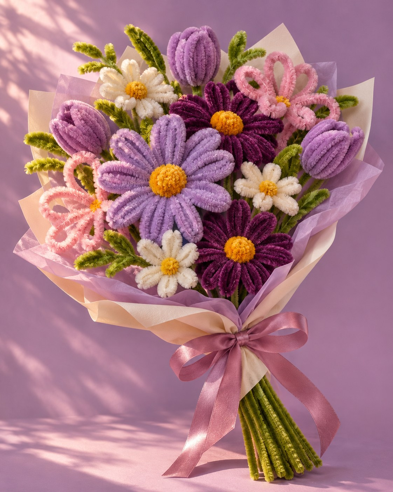

Buquês artesanais de chenille
Flores que
nascem das mãos.
A DLS Flores chega para transformar fios de chenille em buquês artesanais, feitos com carinho e atenção a cada detalhe.
Conheça a DLS Flores
Os buquês
Em breve, fotos dos buquês de chenille da DLS Flores.

Sobre a DLS Flores
Do fio à flor
Com seu toque aveludado, o chenille ganha forma nas mãos. Pétalas, folhas e miolos são moldados um a um antes de se encontrarem no buquê.
Cores e texturas se combinam em arranjos para presentear, celebrar uma data especial ou trazer um toque de cor para casa.